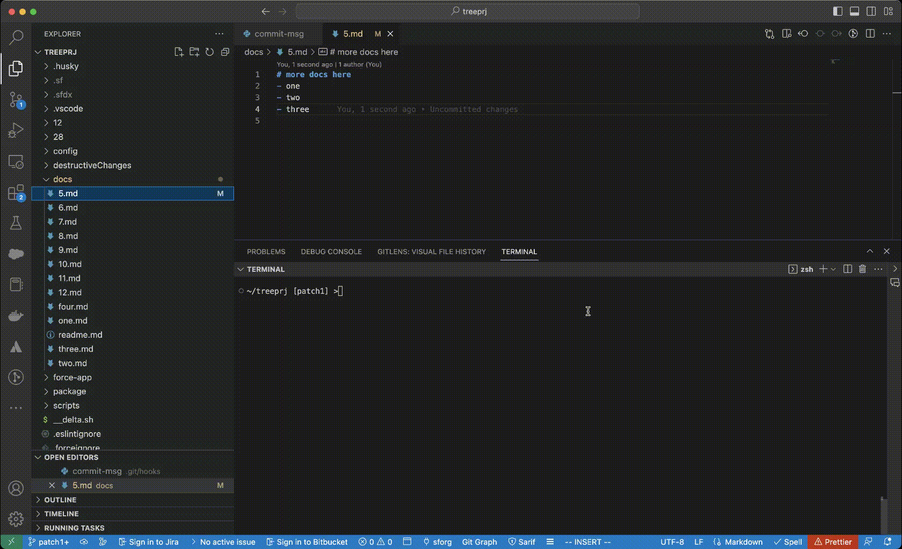

git hooks

Good Projects have good git hooks!
sequenceDiagram autonumber Developer->>VSCode: VSCode extension: <br/> Validates code on-the-fly Developer->>git: Prepare for commit git->>Developer: Using git hooks: <br>Validates commit message <br/>Performs code-scan<br/> Rio-AutoDeltaDeployer->>Org: Every 30 min perform:<br/>Code-scan<br/> Bails out if threshold is reached
Pre-requisites
- Make sure your PMD tools are installed according to this
- Check python is already installed in your system by typing following in the terminal:
python
Or
python3
-
If you are successful in above command, you have already python installed if not continue to next steps:
-
Python is installed in one of these 2 ways
- Install from python.org
- Install via Homebrew
/bin/bash -c "$(curl -fsSL https://raw.githubusercontent.com/Homebrew/install/master/install.sh)"- After Homebrew is installed install python
brew install python -
Required SFDX Plugin is installed:
sfdx plugins:install sfdx-mohanc-plugins -
All the hooks have to be made executable. For example:
chmod +x prepare-commit-msg pre-commit commit-msg
- You can view this :
/treeprj/.git/hooks [patch1] >ls -l prepare-commit-msg pre-commit commit-msg
-rwxr-xr-x 1 mchinnappan staff 522 Jan 25 08:43 commit-msg
-rwxr-xr-x 1 mchinnappan staff 1050 Feb 8 03:47 pre-commit
-rwxr-xr-x 1 mchinnappan staff 177 Jan 25 05:54 prepare-commit-msg

-
Here we explain how to use the power of git hooks to check/enforce:
- commit comments quality
- the committed code is deployable
-
Git hooks can be run:
-
locally
-
prepare-commit-msg
-
pre-commit
-
commit-msg
-
post-commit
-
They are not copied over to the new repository when you run git clone. And, since hooks are local, they can be altered by anybody with access to the repository.
-
-
on git server
- pre-receive
- update
- post-receive
-
Local hooks can only serve as a guidance and should not be relied upon for enforcements.
-
They are not copied over to the new repository when you run git clone.
-
Can be altered by anybody with access to the repository.
-
.git/hooks directoryisn’t cloned with the rest of your project, nor is it under version control.- Easily disabled by the user - by deleting the
.git/hook/directory or--no-verifywith git cli - We need to find a way to make sure hooks stay up-to-date amongst your team members.
- You can’t force developers to create commits that look a certain way
- You can only encourage them to do so.
- Easily disabled by the user - by deleting the
-
-
Solution
-
A simple solution to these local problems is to:
- Store your hooks in the actual project directory (above the
.gitdirectory) - This lets you edit them like any other version-controlled file
- To install a hook, you can create a symlink to it in
.git/hooks
- Store your hooks in the actual project directory (above the
-
Git Templates Directory
- Git's Template Directory mechanism that makes it easier to install hooks automatically.
- All of the files and directories contained in this template directory are copied into the
.gitdirectory every time you usegit initorgit clone.
-
- Server hooks are a better choice for enforcing rules.
Topics we will cover here:
Sample prepare-commit-msg
cat .git/hooks/prepare-commit-msg
#!/usr/bin/env python3
import sys
import subprocess
# Run the git command to get the current branch name
result = subprocess.run(['git', 'rev-parse', '--abbrev-ref', 'HEAD'], stdout=subprocess.PIPE)
# Extract the branch name from the command output
branch_name = result.stdout.decode('utf-8').strip()
#print(branch_name)
# read .git/COMMIT_EDITMSG
commit_msg_filepath = sys.argv[1]
with open(commit_msg_filepath, "w") as f:
# change the following as needed
f.write(f"{branch_name} your info\n#You must include Ticket reference in the first line")
prepare-commit-msg in action
git branch WI-123456
git checkout WI-123456
Switched to branch 'WI-123456'
touch r3.md
[WI-123456]- >git add .
[WI-123456]- >git commit
[WI-123456 e855e40] WI-123456 added to support training
1 file changed, 0 insertions(+), 0 deletions(-)
create mode 100644 r3.md
[WI-123456]- > git lg
* e855e40 - (3 minutes ago) WI-123456 added to support training - mohan-chinnappan-n (HEAD -> WI-123456)
git lg
* 8ba0da4 - (3 minutes ago) WI-12345 added supported for new filed xyz - mohan-chinnappan-n (HEAD -> WI-12345)
commit-msg
- With commit-msg we can enforce commit message
#!/usr/bin/env python3
# python script check the format of the commit with a regex
# valid: WI-123456 adding new docs
# echo $? -> 0
# invalid: " adding more docs"
# echo $? -> 1
# TODO: change the regex to fit your needs
import re,sys
input = sys.argv[1]
print('INPUT', input)
prefix='==='
with open(input, 'r') as file:
data = file.read()
p = re.compile("^WI-([0-9]*){1,6}\s[a-zA-Z0-9\s]{1,30}")
print (f'{prefix} commit msg: {data} ')
if bool(p.match(data)):
print (f'{prefix} Valid commit message!{prefix}')
else:
print (f'{prefix} Invalid commit message! bailing out... {prefix}')
exit(1)
Testing
cat ".git/COMMIT_EDITMSG"
WI-123456 adding new docs
~/treeprj [patch1] >python .git/hooks/commit-msg ".git/COMMIT_EDITMSG"
Invalid commit message! bailing out...
~/treeprj [patch1] >echo $?
1
~/treeprj [patch1] >python .git/hooks/commit-msg ".git/COMMIT_EDITMSG"
Valid commit message!
~/treeprj [patch1] >echo $?
0
Demo
git commit
Jan 25, 2023 8:45:02 AM net.sourceforge.pmd.PMD encourageToUseIncrementalAnalysis
WARNING: This analysis could be faster, please consider using Incremental Analysis: https://pmd.github.io/pmd-6.47.0/pmd_userdocs_incremental_analysis.html
SELECT COUNT(*) AS CNT FROM CSV("results.csv", {headers:true}) WHERE Priority < 3
nerrors: 0
Continue the deployment...
Deploying v55.0 metadata to test-uzsmfdqkhtk7@example.com using the v56.0 SOAP API
Deploy ID: 0AfDM000016PncS0AS
DEPLOY PROGRESS | ████████████████████████████████████████ | 1/1 Components
=== Deployed Source
FULL NAME TYPE PROJECT PATH
────────── ───────── ──────────────────────────────────────────────────────
HelloPeach ApexClass force-app/main/default/classes/HelloPeach.cls
HelloPeach ApexClass force-app/main/default/classes/HelloPeach.cls-meta.xml
Successfully validated the deployment.
('INPUT', '.git/COMMIT_EDITMSG')
Valid commit message!
[patch1 9fd2000] WI-123456 adding new docs
3 files changed, 3 insertions(+), 2 deletions(-)
create mode 100644 docs/12.md
~/treeprj [patch1] >git lg | head -n 1
* 9fd2000 - (53 seconds ago) WI-123456 adding new docs - mohan-chinnappan-n (HEAD -> patch1)
pre-commit hook
- Note this will increase time to do the commit but you will be assured of what is committed is deployable
- Here I have explained for deploy check for classes, but you can add it as needed.
cat .git/hooks/pre-commit
#!/usr/bin/env bash
sfdx force:source:deploy -p /Users/mchinnappan/treeprj/force-app/main/default/classes/ -u test-uzsmfdqkhtk7@example.com -c --verbose
pre-commit hook in action
- Script used for this
~/treeprj [patch1] >
sfdx force:source:deploy -p /Users/mchinnappan/treeprj/force-app/main/default/classes/ -u test-uzsmfdqkhtk7@example.com -c --verbose
Deploying v55.0 metadata to test-uzsmfdqkhtk7@example.com using the v56.0 SOAP API
Deploy ID: 0AfDM000016PUr90AG
DEPLOY PROGRESS | ████████████████████████████████████████ | 1/1 Components
=== Deployed Source
FULL NAME TYPE PROJECT PATH
────────── ───────── ──────────────────────────────────────────────────────
HelloPeach ApexClass force-app/main/default/classes/HelloPeach.cls
HelloPeach ApexClass force-app/main/default/classes/HelloPeach.cls-meta.xml
Successfully validated the deployment.
~/treeprj [patch1] >echo $?
0
- Note here the validation deploy is run to make sure that code is deployable
~/treeprj [patch1] >vi docs/9.md
~/treeprj [patch1] >git add -A
~/treeprj [patch1] >git commit
Deploying v55.0 metadata to test-uzsmfdqkhtk7@example.com using the v56.0 SOAP API
Deploy ID: 0AfDM000016PUwn0AG
DEPLOY PROGRESS | ████████████████████████████████████████ | 1/1 Components
=== Deployed Source
FULL NAME TYPE PROJECT PATH
────────── ───────── ──────────────────────────────────────────────────────
HelloPeach ApexClass force-app/main/default/classes/HelloPeach.cls
HelloPeach ApexClass force-app/main/default/classes/HelloPeach.cls-meta.xml
Successfully validated the deployment.
[patch1 9f3ce34] PATCH1 WI-2345 - more docs added
1 file changed, 2 insertions(+)
create mode 100644 docs/9.md
Adding PMD code scan in pre-commit
~/treeprj [patch1] >vi docs/10.md
~/treeprj [patch1] >git add -A
~/treeprj [patch1] >git commit
Jan 25, 2023 6:41:18 AM net.sourceforge.pmd.PMD encourageToUseIncrementalAnalysis
WARNING: This analysis could be faster, please consider using Incremental Analysis: https://pmd.github.io/pmd-6.47.0/pmd_userdocs_incremental_analysis.html
SELECT COUNT(*) AS CNT FROM CSV("results.csv", {headers:true}) WHERE Priority < 4
nerrors: 3
Number of P1,P2 and P3 issues are: 3. Stopping the deployment!
cat .git/hooks/pre-commit
#!/usr/bin/env bash
# Script for pipeline
# Bails out if count of P1,P2 and P3 are not zero
# -----------------------------------------
#----- configure the following to meet your needs ----
RULESET=~/.pmd/apex_ruleset.xml
MSG="Number of P1,P2 and P3 issues are"
THRESHOLD=3
CODE=/Users/mchinnappan/treeprj/force-app/main/default/classes/
#-----------------------------------------------------
PREFIX="==="
# Run the pmd
echo "$PREFIX Running PMD scan on ${CODE} ${PREFIX}..."
echo "Going to run: pmd-run.sh pmd -R $RULESET -d $CODE -f csv > results.csv ..."
pmd-run.sh pmd -R $RULESET -d $CODE -f csv > results.csv
# query the results using SQL
echo "SELECT COUNT(*) AS CNT FROM CSV(\"results.csv\", {headers:true}) WHERE Priority < $THRESHOLD" > q.sql
cat q.sql
sfdx mohanc:data:query:sql -q q.sql > out.json
# check for the errors
echo "$PREFIX Checking for PMD violations ... $PREFIX"
nerrors=`sfdx mohanc:data:jq -f '.[].CNT' -i out.json`
echo "nerrors: $nerrors"
if [ "$nerrors" != 0 ]
then
echo "$PREFIX $MSG: $nerrors. Stopping the deployment! $PREFIX "
exit 2
else
echo "$PREFIX No PMD violations! $PREFIX"
fi
echo "$PREFIX Continue the deployment...$PREFIX"
echo sfdx force:source:deploy -p $CODE -u test-uzsmfdqkhtk7@example.com -c --verbose
Demo of successful commit
~/treeprj [patch1] >git add -A
~/treeprj [patch1] >git commit
Jan 25, 2023 6:51:23 AM net.sourceforge.pmd.PMD encourageToUseIncrementalAnalysis
WARNING: This analysis could be faster, please consider using Incremental Analysis: https://pmd.github.io/pmd-6.47.0/pmd_userdocs_incremental_analysis.html
SELECT COUNT(*) AS CNT FROM CSV("results.csv", {headers:true}) WHERE Priority < 3
nerrors: 0
Continue the deployment...
Deploying v55.0 metadata to test-uzsmfdqkhtk7@example.com using the v56.0 SOAP API
Deploy ID: 0AfDM000016PX2w0AG
DEPLOY PROGRESS | ████████████████████████████████████████ | 1/1 Components
=== Deployed Source
FULL NAME TYPE PROJECT PATH
────────── ───────── ──────────────────────────────────────────────────────
HelloPeach ApexClass force-app/main/default/classes/HelloPeach.cls
HelloPeach ApexClass force-app/main/default/classes/HelloPeach.cls-meta.xml
Successfully validated the deployment.
[patch1 b1ebf5a] PATCH1 WI-4567 - add more docs
5 files changed, 9 insertions(+)
create mode 100644 docs/10.md
create mode 100644 docs/11.md
...
~/treeprj [patch1] >git lg
* b1ebf5a - (2 minutes ago) PATCH1 WI-4567 - add more docs - mohan-chinnappan-n (HEAD -> patch1)
